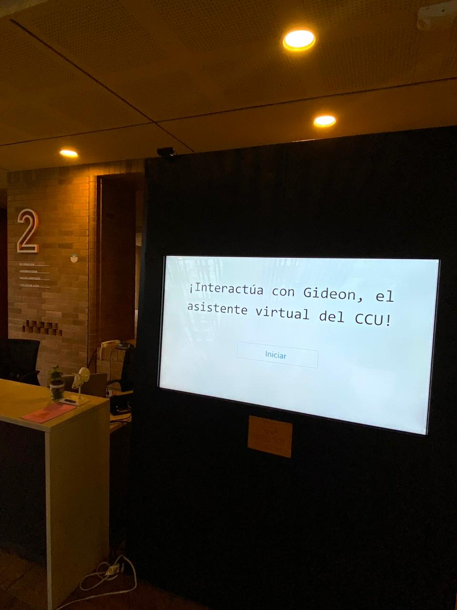
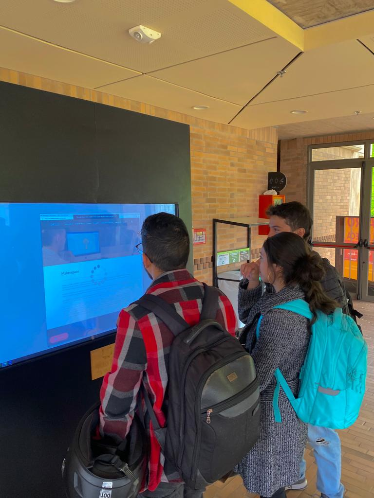
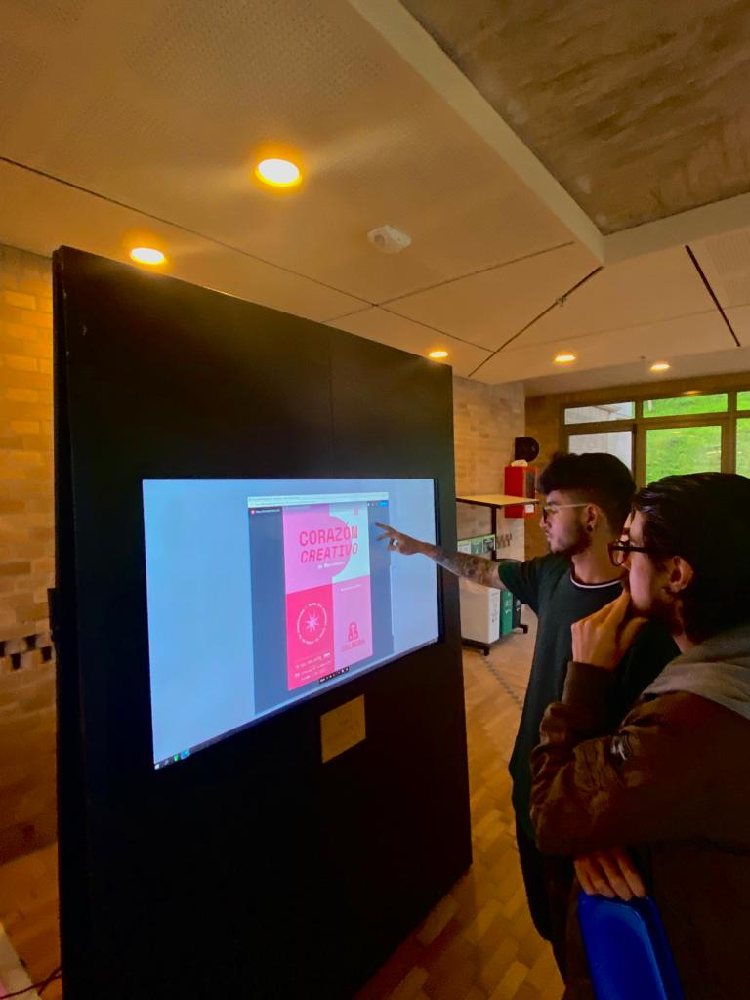
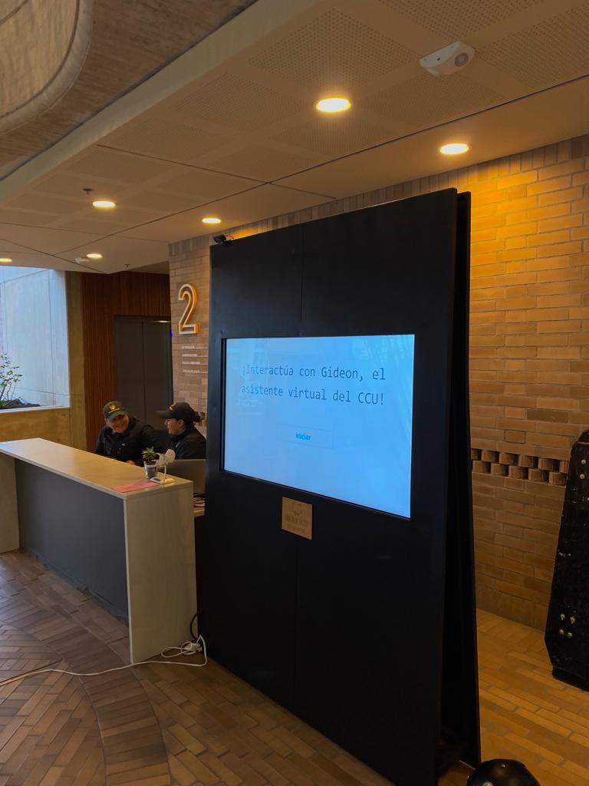

Gideon es un desarrollo enfocado en mejorar la experiencia, bienestar y accesibilidad de la comunidad educativa y demás visitantes del CCU. Integrando la tecnología con la cultura, permitiendo seguir expandiendo la brecha entre las comunidades y las tecnologías.

El desarrollo va orientado en un entorno web, desarrollado principalmente con JavaScript, implementando diferentes librerias y APIS que permiten el entendimiento de las ordenes del usuario, además de su respuesta de forma modular.
Actualmente está implementado en el Centro Cultural Universitario Rogelio Salmona, instalado en una pantalla táctil de facil uso para todos los visitantes.

Unas de sus muchas funciones es conocer la historia del CCU, así como facilitar la reserva de espacios del mismo centro, tener un recorrido virtual de todo el Centro Cultural y muchas otras herramientas más.
